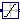
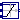
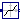
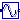
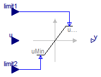
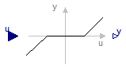
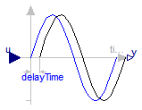
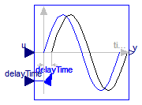

This package contains discontinuous and non-differentiable, algebraic input/output blocks.
Extends from Modelica.Icons.Package (Icon for standard packages).
| Name | Description |
|---|---|
|  Limiter | Limit the range of a signal |
|  VariableLimiter | Limit the range of a signal with variable limits |
|  DeadZone | Provide a region of zero output |
| FixedDelay | Delay block with fixed DelayTime |
|  PadeDelay | Pade approximation of delay block with fixed DelayTime |
| VariableDelay | Delay block with variable DelayTime |
The Limiter block passes its input signal as output signal as long as the input is within the specified upper and lower limits. If this is not the case, the corresponding limits are passed as output.
Extends from Interfaces.SISO (Single Input Single Output continuous control block).
| Type | Name | Default | Description |
|---|---|---|---|
| Real | uMax | Upper limits of input signals | |
| Real | uMin | -uMax | Lower limits of input signals |
| Boolean | limitsAtInit | true | = false, if limits are ignored during initializiation (i.e., y=u) |
| Type | Name | Description |
|---|---|---|
| input RealInput | u | Connector of Real input signal |
| output RealOutput | y | Connector of Real output signal |
block Limiter "Limit the range of a signal"
parameter Real uMax(start=1) "Upper limits of input signals";
parameter Real uMin= -uMax "Lower limits of input signals";
parameter Boolean limitsAtInit = true
"= false, if limits are ignored during initializiation (i.e., y=u)";
extends Interfaces.SISO;
equation
assert(uMax >= uMin, "Limiter: Limits must be consistent. However, uMax (=" + String(uMax) +
") < uMin (=" + String(uMin) + ")");
if initial() and not limitsAtInit then
y = u;
assert(u >= uMin - 0.01*abs(uMin) and
u <= uMax + 0.01*abs(uMax),
"Limiter: During initialization the limits have been ignored.\n"+
"However, the result is that the input u is not within the required limits:\n"+
" u = " + String(u) + ", uMin = " + String(uMin) + ", uMax = " + String(uMax));
else
y = smooth(0,if u > uMax then uMax else if u < uMin then uMin else u);
end if;
end Limiter;

The Limiter block passes its input signal as output signal as long as the input is within the upper and lower limits specified by the two additional inputs limit1 and limit2. If this is not the case, the corresponding limit is passed as output.
Extends from Interfaces.SISO (Single Input Single Output continuous control block).
| Type | Name | Default | Description |
|---|---|---|---|
| Boolean | limitsAtInit | true | = false, if limits are ignored during initializiation (i.e., y=u) |
| Type | Name | Description |
|---|---|---|
| input RealInput | u | Connector of Real input signal |
| output RealOutput | y | Connector of Real output signal |
| input RealInput | limit1 | Connector of Real input signal used as maximum of input u |
| input RealInput | limit2 | Connector of Real input signal used as minimum of input u |
block VariableLimiter
"Limit the range of a signal with variable limits"
extends Interfaces.SISO;
parameter Boolean limitsAtInit = true
"= false, if limits are ignored during initializiation (i.e., y=u)";
Interfaces.RealInput limit1
"Connector of Real input signal used as maximum of input u";
Interfaces.RealInput limit2
"Connector of Real input signal used as minimum of input u";
protected
Real uMax;
Real uMin;
equation
uMax = max(limit1, limit2);
uMin = min(limit1, limit2);
if initial() and not limitsAtInit then
y = u;
assert(u >= uMin - 0.01*abs(uMin) and
u <= uMax + 0.01*abs(uMax),
"VariableLimiter: During initialization the limits have been ignored.\n"+
"However, the result is that the input u is not within the required limits:\n"+
" u = " + String(u) + ", uMin = " + String(uMin) + ", uMax = " + String(uMax));
else
y = smooth(0,if u > uMax then uMax else if u < uMin then uMin else u);
end if;
end VariableLimiter;

The DeadZone block defines a region of zero output.
If the input is within uMin ... uMax, the output is zero. Outside of this zone, the output is a linear function of the input with a slope of 1.
Extends from Interfaces.SISO (Single Input Single Output continuous control block).
| Type | Name | Default | Description |
|---|---|---|---|
| Real | uMax | Upper limits of dead zones | |
| Real | uMin | -uMax | Lower limits of dead zones |
| Boolean | deadZoneAtInit | true | = false, if dead zone is ignored during initializiation (i.e., y=u) |
| Type | Name | Description |
|---|---|---|
| input RealInput | u | Connector of Real input signal |
| output RealOutput | y | Connector of Real output signal |
block DeadZone "Provide a region of zero output"
parameter Real uMax(start=1) "Upper limits of dead zones";
parameter Real uMin=-uMax "Lower limits of dead zones";
parameter Boolean deadZoneAtInit = true
"= false, if dead zone is ignored during initializiation (i.e., y=u)";
extends Interfaces.SISO;
equation
assert(uMax >= uMin, "DeadZone: Limits must be consistent. However, uMax (=" + String(uMax) +
") < uMin (=" + String(uMin) + ")");
if initial() and not deadZoneAtInit then
y = u;
else
y = smooth(0,if u > uMax then u - uMax else if u < uMin then u - uMin else 0);
end if;
end DeadZone;

The Input signal is delayed by a given time instant, or more precisely:
y = u(time - delayTime) for time > time.start + delayTime
= u(time.start) for time ≤ time.start + delayTime
Extends from Modelica.Blocks.Interfaces.SISO (Single Input Single Output continuous control block).
| Type | Name | Default | Description |
|---|---|---|---|
| Time | delayTime | Delay time of output with respect to input signal [s] |
| Type | Name | Description |
|---|---|---|
| input RealInput | u | Connector of Real input signal |
| output RealOutput | y | Connector of Real output signal |
block FixedDelay "Delay block with fixed DelayTime"
extends Modelica.Blocks.Interfaces.SISO;
parameter SI.Time delayTime(start=1)
"Delay time of output with respect to input signal";
equation
y = delay(u, delayTime);
end FixedDelay;
The Input signal is delayed by a given time instant, or more precisely:
y = u(time - delayTime) for time > time.start + delayTime
= u(time.start) for time ≤ time.start + delayTime
The delay is approximated by a Pade approximation, i.e., by a transfer function
b[1]*s^m + b[2]*s^[m-1] + ... + b[m+1]
y(s) = --------------------------------------------- * u(s)
a[1]*s^n + a[2]*s^[n-1] + ... + a[n+1]
where the coefficients b[:] and a[:] are calculated such that the coefficients of the Taylor expansion of the delay exp(-T*s) around s=0 are identical upto order n+m.
The main advantage of this approach is that the delay is approximated by a linear differential equation system, which is continuous and continuously differentiable. For example, it is uncritical to linearize a system containing a Pade-approximated delay.
The standard text book version uses order "m=n", which is also the default setting of this block. The setting "m=n-1" may yield a better approximation in certain cases.
Literature:
Otto Foellinger: Regelungstechnik, 8. Auflage,
chapter 11.9, page 412-414, Huethig Verlag Heidelberg, 1994
Extends from Modelica.Blocks.Interfaces.SISO (Single Input Single Output continuous control block).
| Type | Name | Default | Description |
|---|---|---|---|
| Time | delayTime | Delay time of output with respect to input signal [s] | |
| Integer | n | 1 | Order of pade approximation |
| Integer | m | n | Order of numerator |
| Type | Name | Description |
|---|---|---|
| input RealInput | u | Connector of Real input signal |
| output RealOutput | y | Connector of Real output signal |
block PadeDelay
"Pade approximation of delay block with fixed DelayTime "
extends Modelica.Blocks.Interfaces.SISO;
parameter SI.Time delayTime(start=1)
"Delay time of output with respect to input signal";
parameter Integer n(min=1) = 1 "Order of pade approximation";
parameter Integer m(
min=1,
max=n) = n "Order of numerator";
protected
Real x1dot "Derivative of first state of TransferFcn";
Real xn "Highest order state of TransferFcn";
Real a[n + 1];
Real b[m + 1];
public
final output Real x[n]
"State of transfer function from controller canonical form";
protected
function padeCoefficients
input Real T "delay time";
input Integer n "order of denominator";
input Integer m "order of numerator";
output Real b[m + 1] "numerator coefficients of transfer function";
output Real a[n + 1] "denominator coefficients of transfer function";
protected
Real nm;
algorithm
a[1] := 1;
b[1] := 1;
nm := n + m;
for i in 1:n loop
a[i + 1] := a[i]*(T*((n - i + 1)/(nm - i + 1))/i);
if i <= m then
b[i + 1] := -b[i]*(T*((m - i + 1)/(nm - i + 1))/i);
end if;
end for;
b := b[m + 1:-1:1];
a := a[n + 1:-1:1];
end padeCoefficients ;
equation
(b,a) = padeCoefficients(delayTime, n, m);
[der(x); xn] = [x1dot; x];
[u] = transpose([a])*[x1dot; x];
[y] = transpose([zeros(n - m, 1); b])*[x1dot; x];
initial equation
x[n] = u;
end PadeDelay;

The Input signal is delayed by a given time instant, or more precisely:
y = u(time - delayTime) for time > time.start + delayTime
= u(time.start) for time ≤ time.start + delayTime
where delayTime is an additional input signal which must follow the following relationship:
0 ≤ delayTime ≤ delayMax
Extends from Modelica.Blocks.Interfaces.SISO (Single Input Single Output continuous control block).
| Type | Name | Default | Description |
|---|---|---|---|
| Real | delayMax | maximum delay time |
| Type | Name | Description |
|---|---|---|
| input RealInput | u | Connector of Real input signal |
| output RealOutput | y | Connector of Real output signal |
| input RealInput | delayTime |
block VariableDelay "Delay block with variable DelayTime" extends Modelica.Blocks.Interfaces.SISO; parameter Real delayMax(min=0, start=1) "maximum delay time";Modelica.Blocks.Interfaces.RealInput delayTime; equation y = delay(u, delayTime, delayMax);end VariableDelay;